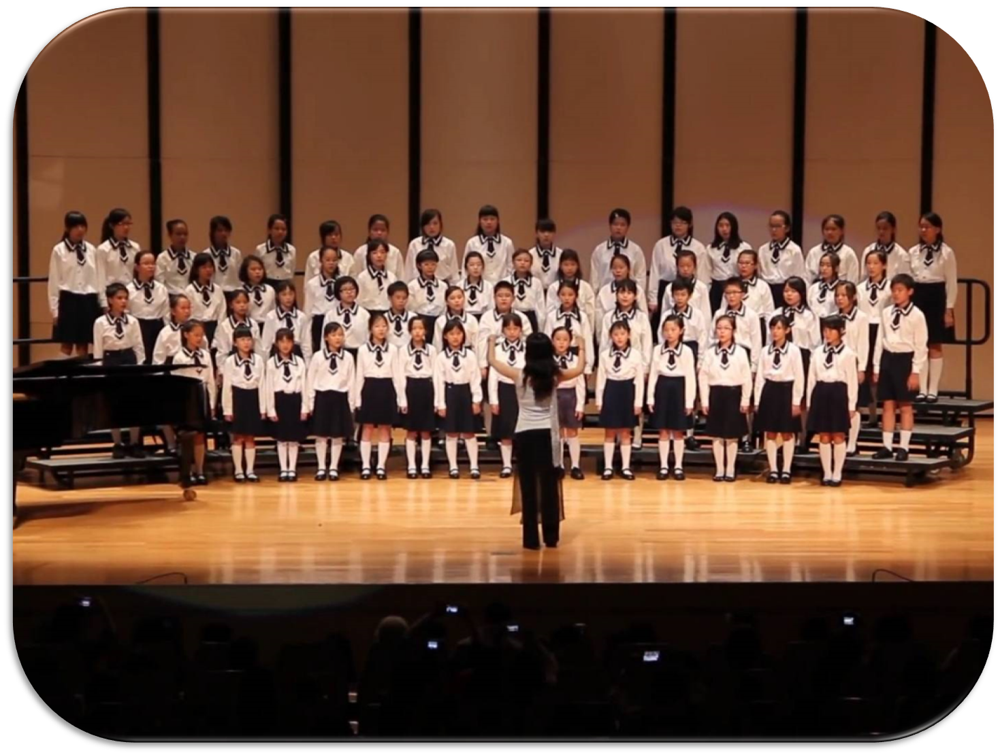
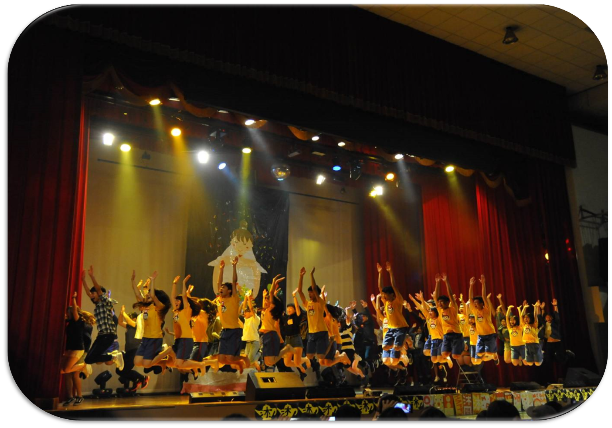
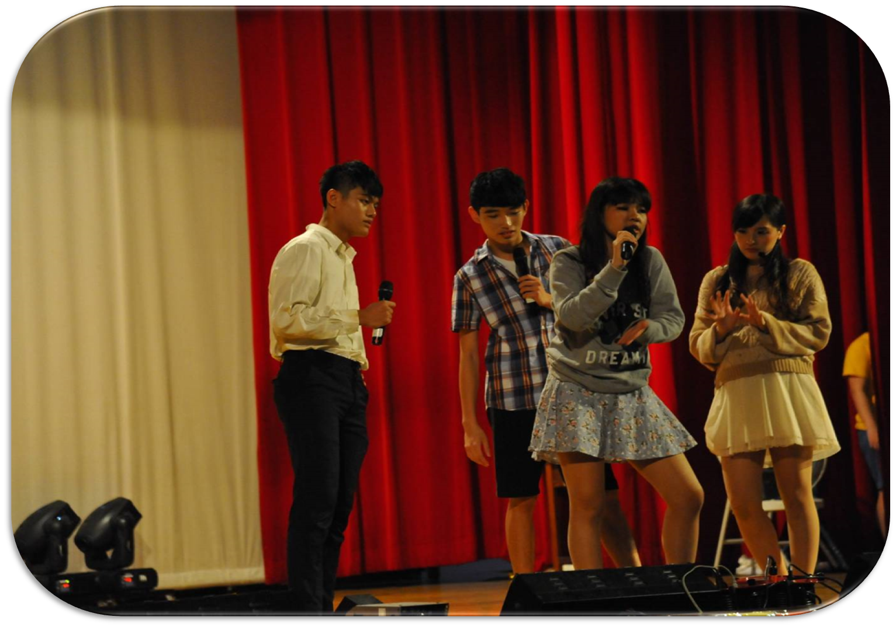
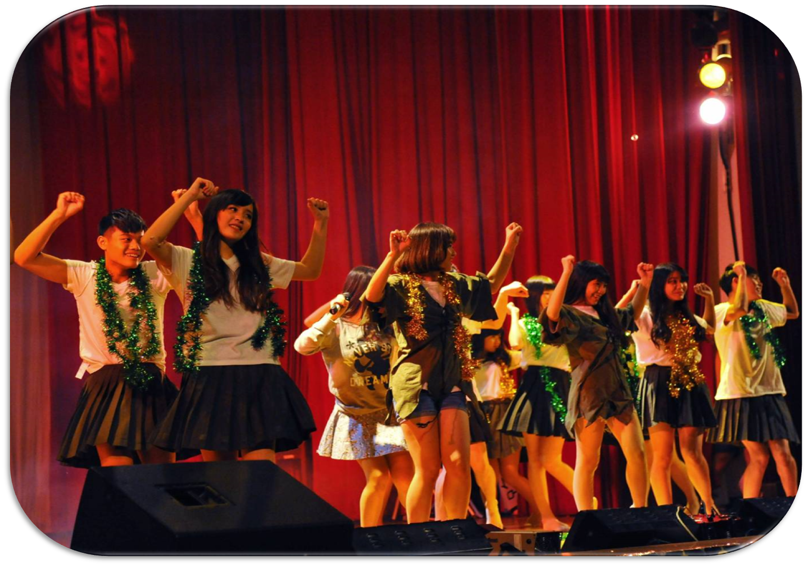
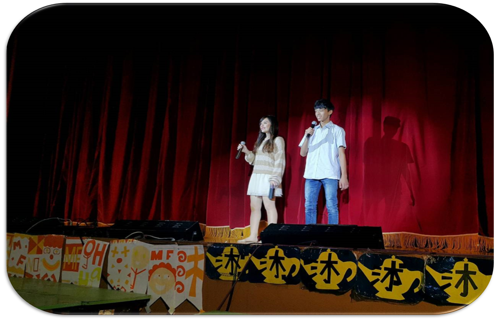
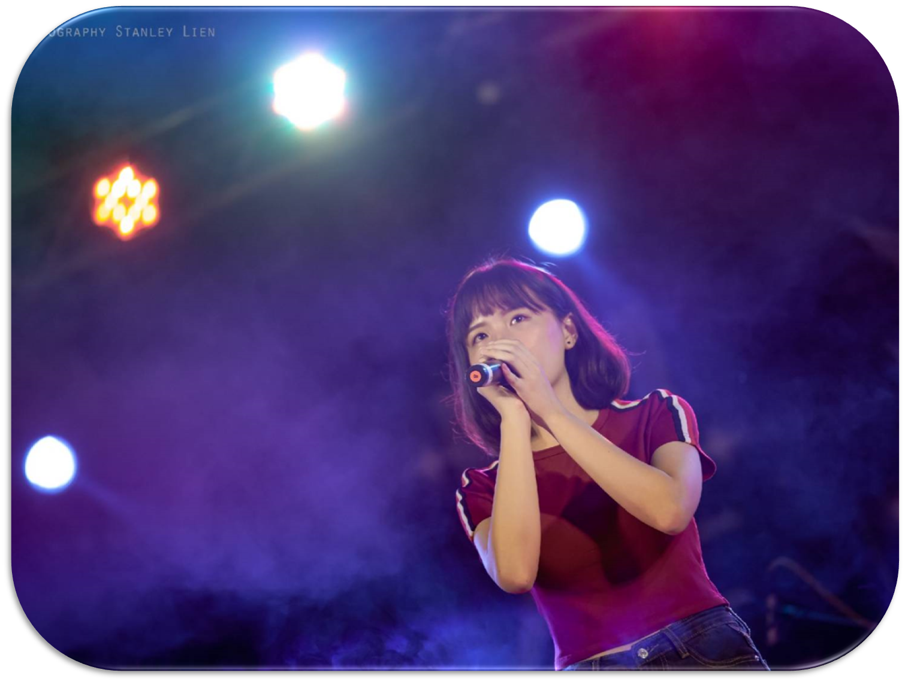

社團活動

從小就喜歡唱歌，在國小四年級時
加入合唱團，和大家一起練習和聲，
是個很特別的經驗！記得在六年級
的時候，合唱團召了三年級的學弟妹
進來，可是他們很不認真都亂唱，
然後我就超討厭他們的哈哈哈。

高一的時候誤打誤撞進了康輔社，
沒想到最後竟然還當上副社長XD
沐風幾乎占了我２／３的高中生活
雖然也因此荒廢課業(媽媽對不起)
但能認識一群瘋子實在太棒ㄌ♡
這是我一生中活得最青春的時候！




高中其實都沒什麼上台唱歌的機會
上了大學當然要好好把握阿～
於是我決定加入卡K社！(要改名了啦)
如我所願，卡K給我不少舞台能夠發揮
讓我可以做自己一直最喜歡的事情！
在此社團我擔任的是顧問的職位。
目標期許
大學四年間，最希望能增進的就是英文能力！雖然從幼稚園就開始學英文了，到現在卻依然不精通。未來希望自己能養成看美劇的習慣，藉由休閒活動增進聽力和單字量。口說能力也是我比較缺乏的部分，如果能勇敢開口說英文，我想會進步得更快。在近代社會中，英文是個很重要的武器，給自己的目標是多益能夠進步到750分！有機會就出國看看～
待在資管系，把本業顧好是當然的！當初因為對寫程式有興趣才選擇資訊相關科系，實際學習過後，雖然偶爾會挺挫折的，但還是覺得寫程式很有趣，尤其是完成後成就感的部分。希望自己大學四年不僅僅是跟著學校進度學習各種程式，而能加以進修、鑽研，我要成為一個公司搶著要的電腦工程師啦！
希望自己不要再那麼懶散，然後成為一個勇敢面對所有事的人，遇到困難不可以逃避！要好好過生活不要糜爛耍廢，每天都要過充實，做任何事情的時候都再專注認真一點，讓自己成為更優秀的人！不要一直待在舒適圈，試著突破自己，沒試過不會知道極限在哪裡～好勵志ㄛ哈哈哈哈總之希望以上的目標我全都能做得到～～～